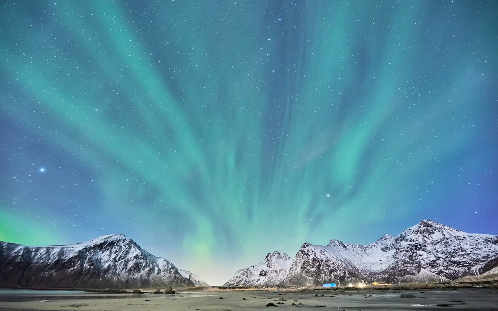
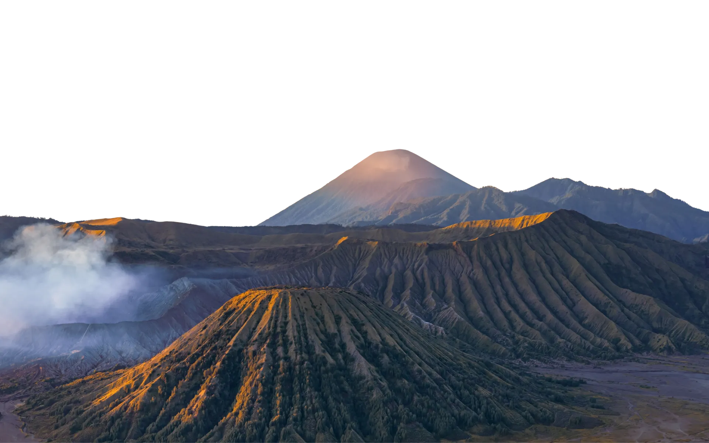
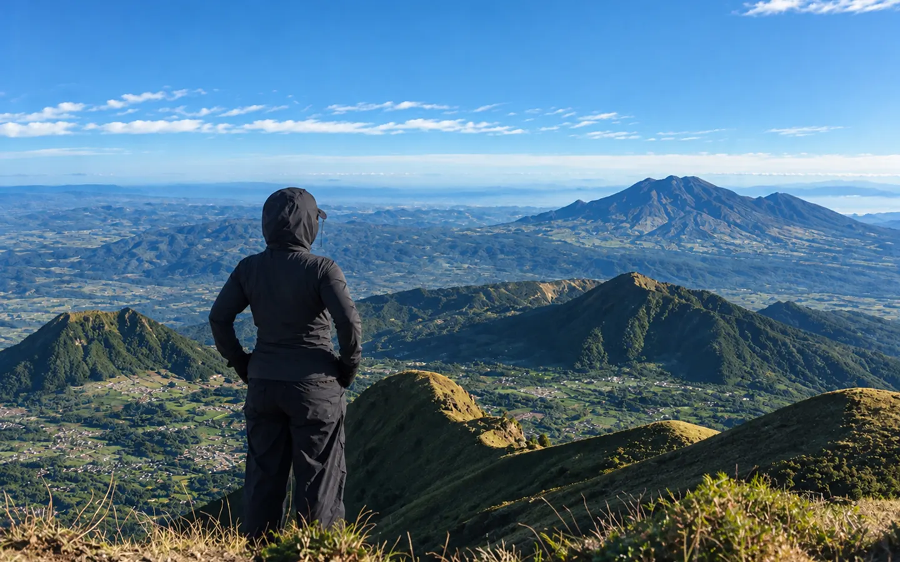
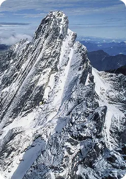
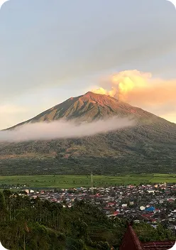
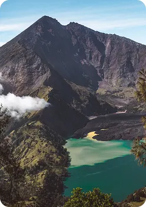
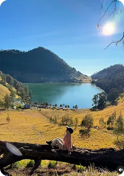
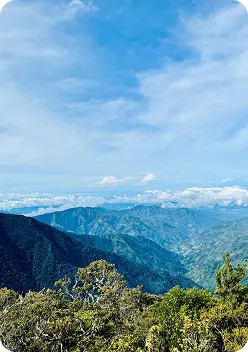
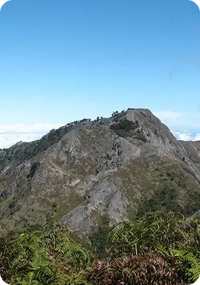
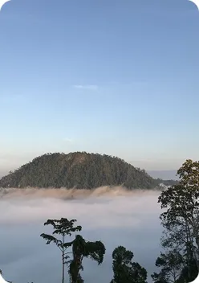

Seven summit of
INDONESIA

Jelajahi tujuh puncak tertinggi di tujuh pulau besar Indonesia, dari Papua sampai Kalimantan.
Scroll me
01 — Expeditions
See the
Mountains
Temukan keindahan puncak-puncak tertinggi Indonesia, di mana setiap jalur membawa pemandangan menakjubkan dan petualangan yang tak terlupakan.
Lihat Semua Puncak
PapuaCarstensz Pyramid
4.884 mdpl

Sumatra Barat & JambiKerinci
3.805 mdpl

Nusa Tenggara BaratRinjani
3.726 mdpl

Jawa TimurSemeru
3.676 mdpl

Sulawesi SelatanLatimojong
3.478 mdpl

MalukuBinaiya
3.027 mdpl

KalimantanBukit Raya
2.278 mdpl
Destinasi 01 / 07
Summit
Puncak Jaya

02 — Mulai Pendakian
Ready to
reach
the top?
Pelajari jalur, pos, dan estimasi waktu tiap gunung sebelum berangkat. Butuh bantuan merencanakan? Tim kami siap membantu.